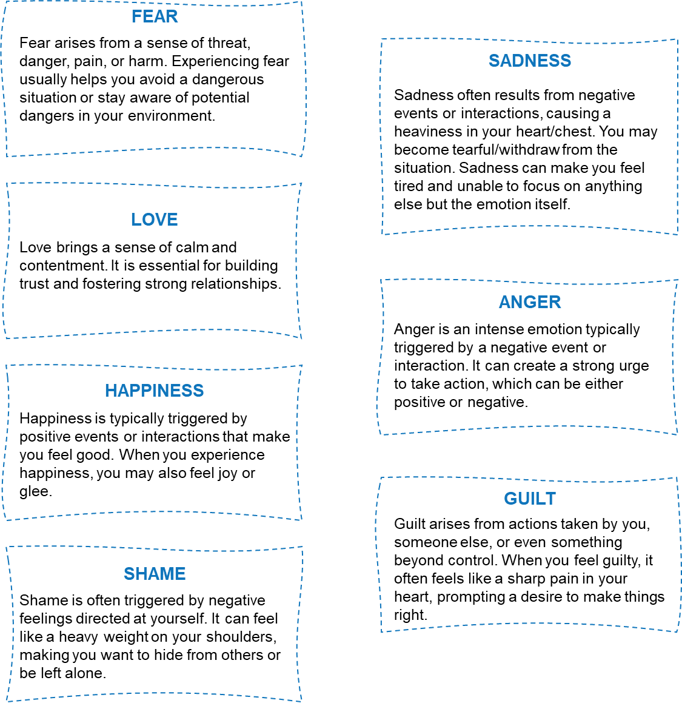
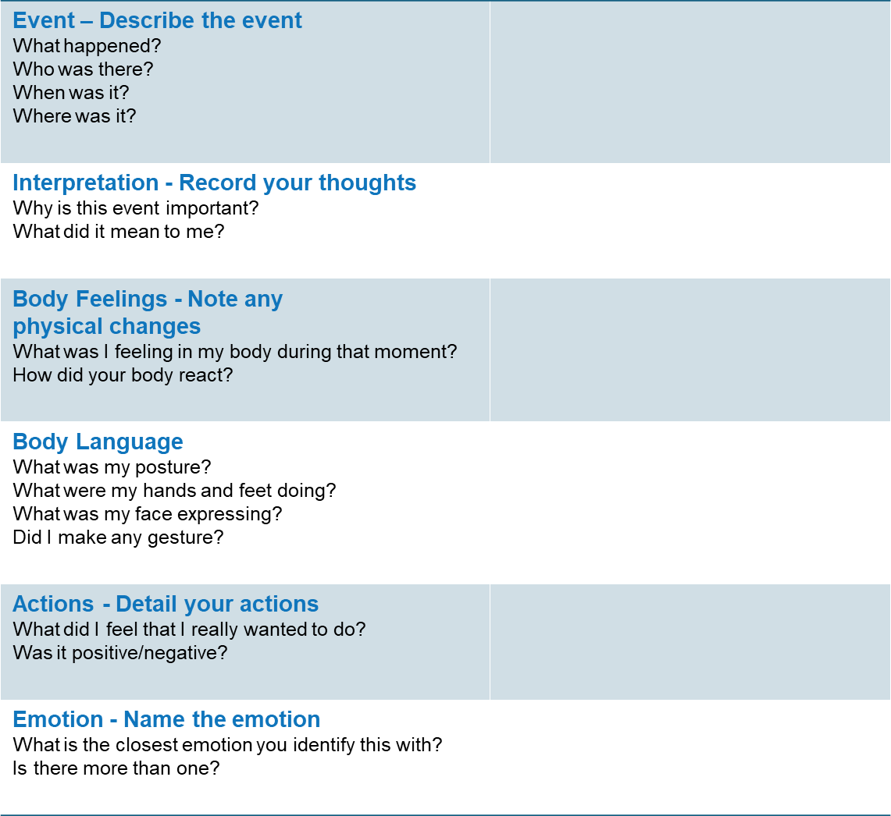

Session 2: Identifying Emotions and Actions
Session 2 Overview
In this second session, we will build on your understanding about regulating emotions – particularly around the most common types of emotions that you may experience in everyday life. We will explore how these emotions present themselves including what other types of feelings they are closely associated with. In this session, you will also be completing an exercise to help you reflect on how you have navigated situations and identify the emotion(s) you have felt then.
Learning Objectives
- Understand Common Emotions: Learn about the most common emotions you may feel and how they appear in your interactions with yourself and others.
- Identify Your Emotional Navigation Skills: Gain insights into how you’ve felt and expressed your thoughts and emotions with an exercise designed to help you see the big picture.
- Enhance Your Emotion Regulation Toolkit: Reflect on how you've managed situations by considering your perspective, body language, initial urges, and overall emotions felt in the moment to build on your resources and skills..
The Problem with Too Much Time in Bed
Understanding what triggers your feelings is crucial. Was it an event, a thought, or another emotion?
Maybe you feel overwhelmed or can’t pinpoint your exact emotion. During such times, it's important to listen to your body. Are your arms crossed? Are your shoulders tense? Scanning your body's reactions can help you identify your emotions.
The emotions cards presented below may help you to increase the awareness about most common feelings you may experience and what they might be trying to tell you.
Naming Our Emotions
The table below can help you identify the emotions you are feeling when you are facing a specific situation. Take a moment to fill this table out with a specific event you can remember where you had experienced strong feelings. You may complete this exercise more than once and discuss what you wrote down with the Mindstride Team. Reflecting on these experiences may help you to better understand and manage your emotions.
Finish and Test Your Knowledge
Now it’s time to see how much you understood in this session. These questions are simply meant to help you get the most out of this session and are not graded or scored!
Click the test your knowledge and once you have finished it, the session will be submitted as complete.